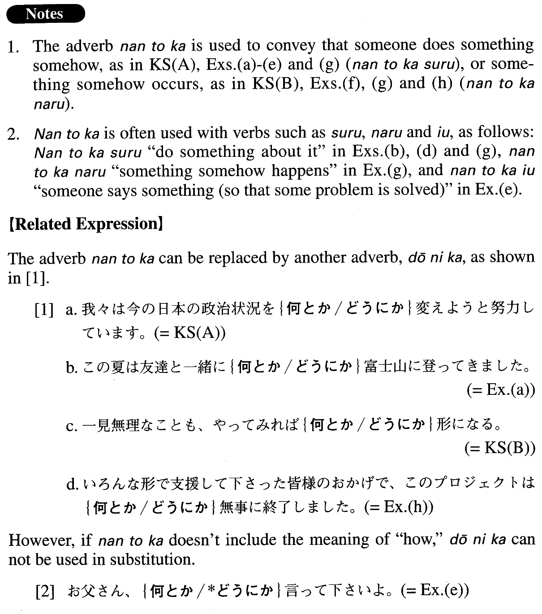

何とか (A. 341)
- (ksa).
- 我々は今の日本の政治状況を何とか変えようと努力しています。
- We are making an effort to change the current Japanese political situation somehow.
- (ksb).
- 一見無理なことも、やってみれば何とか形になる。
- Something which appears to be impossible to do can take shape in one way or another, if you try.
- (a).
- この夏は友達と一緒に何とか富士山に登ってきました。
- This past summer I managed to climb Mt. Fuji with my friend.
- (b).
- 夜型の生活を何とかしたいと思いながら、今でもそれを続けている。
- Although I keep thinking I want to do something about my night owl lifestyle, (literally: even now) I still stay up late.
- (c).
- ボスにせかされているから、この書類を何とか明日までに仕上げなければならないんだ。
- My boss keeps pressing me, so somehow I have to complete this document by tomorrow.
- (d).
- 患者：おでこから血が出ることがあるんです。医者：おでこから血が？うーん。そんな症例は聞いたことがないなあ…。患者：ほんとなんです。お願いします、先生。何とかして下さい。
- Patient: Sometimes my forehead bleeds. Doctor: Your forehead bleeds? I haven't heard of a case like that before. Patient: It's true. Doctor, please do something about it.
- (e).
- 母親：あら、有香、もう勉強は終わったの。娘：勉強なんかやってらんないわよ。母親：まったくしょうがない子ねえ。お父さん、何とか言って下さいよ。
- Mother: Oh, Yuka, you've already finished studying? Daughter: I hate studying! Mother: You're impossible! Dear, say something to her.
- (f).
- 何とかホームページができたのでみんなに見せたい。
- Somehow I managed to make my home page, so now I want to show it to everybody.
- (g).
- アメリカへ行けば何とかなるなんていう考えでアメリカに来たって、自分で何とかしなきゃ何ともならないんだ！
- If you come to the U.S. thinking that you'll get by somehow, you will amount to nothing unless you make an effort on your own.
- (h).
- いろんな形で支援して下さった皆様のおかげで、このプロジェクトは何とか無事に終了しました。
- Thanks to your assistance, which took all kinds of forms, this project has somehow come successfully to completion.
